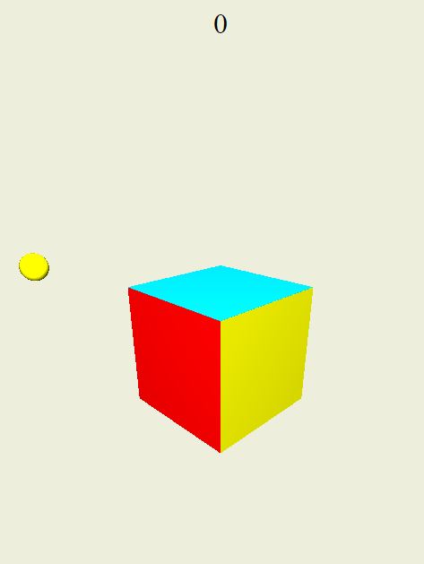
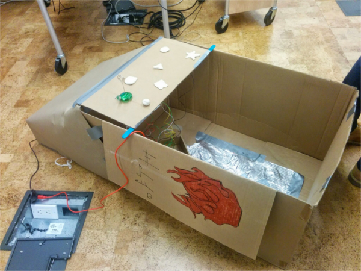

- CubeCatch
-
My team built CubeCatch for the 2015 HackNY Fall Hackathon. We wanted to build a fun game that we would actually want to play. The game is far from finished, but we did a decent amount of work in less than 24 hours. The goal of the game is to catch colored balls in their corresponding colored faces of the cube.
I worked on the logic for collisions, timing and moving the balls, and getting the cube to be different colors on each side. I also implemented drag and drop and zoom features for us to use while developing the game.

Screenshot of the game
-
- FireMaiL
-
FireMaiL was built for the 2015 HackNYU Hackathon. The goal of the app was to make email a better experience for everyone. The app would push important emails to the front of a queue and allow the user to use Tinder-like swiping to decide what to do with it. The screen would show a summarized version of the email, allowing the user to make quicker decisions about the email. In addition, we wanted to create a smart swiping feature that would suggest contextual actions based on the email (basically what Google's Now on Tap does). We got so far as a minimal proof of concept of the app created, and the source code is here
I researched how to the Gmail API worked and figured out how to parse the email data. I also helped implement the third party node.js summarizer.
-
- Spacebox
-
I helped build this game for the 2014 NYU Alternative Control Game Jam (my first hackathon). The premise was to create a game the used alternative physical controls to play. My team won best overall game for our submission. My team decided to make this wacky space themed game involving a cardboard box hooked up to a MaKey MaKey. The backstory of the game was that you found yourself on an abandoned alien planet with only one of their spaceships (hence the strange glyphs on the box). You want to get back to Earth, but you can't read alien, so you can't really control the ship. Luckily, you find that there is one button (the turtle button) that randomizes the controls, as there are more controls built than usable. Your goal is to make it through the levels while not running out of fuel to make it back to Earth.
I worked on building a few levels in Unity with objects that another team member had developed. I also wired up the controls between the MaKey MaKey and the cardboard box.

The alien spaceship
-
- This website
-
I created this website in a text editor. The icons on the contact page were made by Freepik from www.flaticon.com is licensed by CC BY 3.0 The expandable list feature uses jQuery and some JavaScript from this tutorial.
-
- Laser Cut Pieces
-
During my internship at Discovery World, I had access to a laser cutter for personal projects. This inspired me to learn Illustrator so I could use the laser cutter. These are some of my favorite pieces. (Note: colors are for the laser cutter. Etching, cutting, and scoring)


Coaster created for my friend who was going to college in New York.
Material: 1/4" oak


Coaster created for the same friend to remember her roots.
Material: 1/4" oak


Created for some friends and I to remember our hometown.
Material: 1/4" oak


Buckminsterfullerene model created for extra credit in chemistry class. Each vertex simulates a carbon atom.
Materials: cardboard, hot glue
-
- RKHS Homework
-
I created RKHS Homework at the beginning of my sophomore year in high school. During my freshman year, I was known for reminding my friends of their homework and to study for tests. So I decided to make my life easier by creating a Facebook group where I would post all this information once to everyone. Additionally, people in the group could ask their school related questions to a more relevant audience than just their Facebook friends. It started out with around 30 of my classmates and grew to support 220 students by the end of senior year. Every day, I would post the homework for an average of 23 or more classes. RKHS Homework became a place where students would check to see if they had homework and ask questions about assignments. I continued as the moderator of this group right until graduation.
In addition to RKHS Homework, during my junior year, I created a Harry Potter-like House Cup tournament for anyone who wanted to be involved. Students would fill out a questionnaire designed by me and I sorted them into one of the houses accordingly. This tournament had 54 members by the end of senior year. Points were awarded for a variety of good habits like volunteering, athletics, leadership, school spirit, and helping others in the group. 4 times per year the Cup was awarded to the highest scoring house. Members of the winning house received cookies I baked, and I changed the Facebook group cover photo in their honor (like the decorations in the Hogwarts Great Hall). Below are two of the banners I created in GIMP.

Created for Ravenclaw (house colors blue and bronze). Meant to look like ink on parchment.

Created for Gryffindor, (house colors crimson and gold). Meant to look firey.
-
- Photography